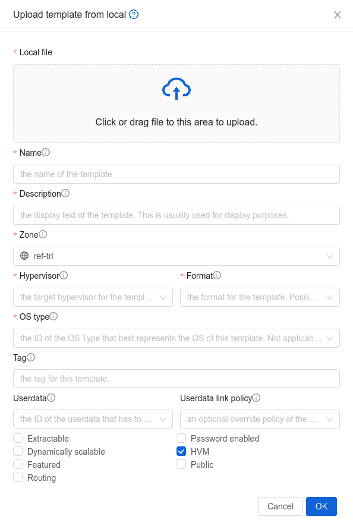
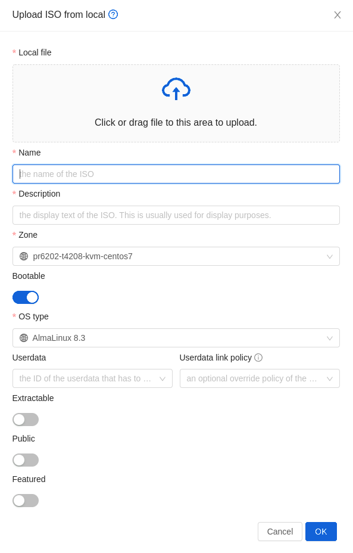
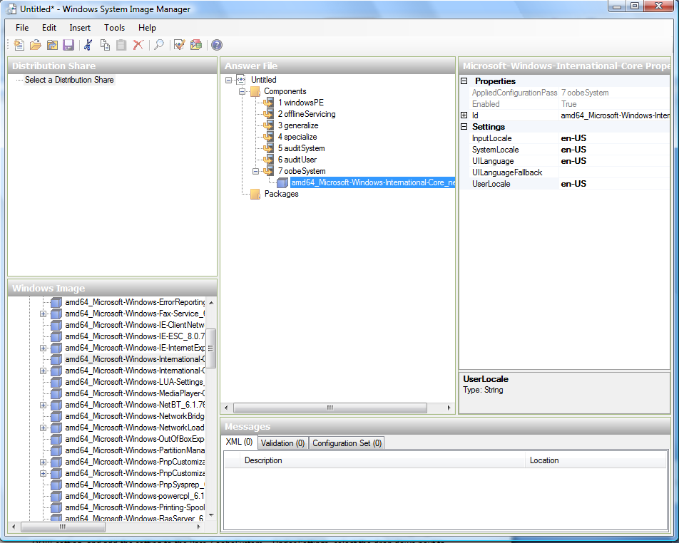
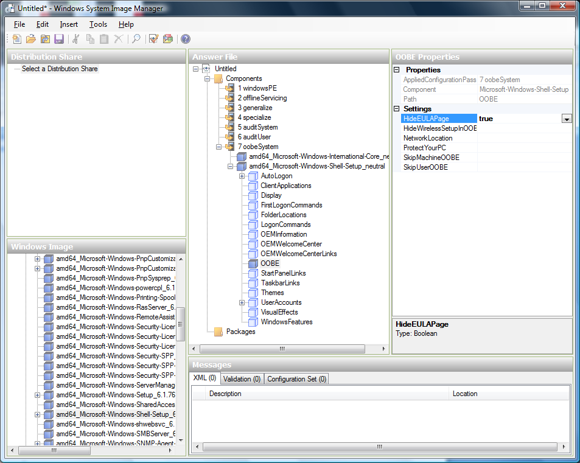

Working With Templates#
A Template is a reusable configuration for Instances. When Users launch Instances, they can choose from a list of Templates.
Creating Templates: Overview#
Zergaw CloudStack ships with a default Template. There are a variety of ways to add more Templates. Administrators and end Users can add Templates. The typical sequence of events is:
Launch an Instance that has the operating system you want. Make any other desired configuration changes to the Instance.
Stop the Instance.
Convert the volume into a Template.
There are other ways to add Templates to CloudStack. For example, you can take a Snapshot of the Instance’s volume and create a Template from the Snapshot, or import a VHD or QCOW2 from another system.
The various techniques for creating Templates are described in the next few sections.
The Default Template#
Zergaw CloudStack includes different default Templates. You can use this Template in your production deployment use custom Templates.
The root password for the default Templates are generated during instance creation and shown as pop-up. Don’t reload the page until the instance creating pop up appeared.
Private and Public Templates#
When a User creates a Template, it can be designated private or public.
Private Templates are only available to the User who created them. By default, an uploaded Template is private.
When a User marks a Template as “public,” the Template becomes available to all Users in all Accounts in the User’s domain, as well as Users in any other domains that have access to the Zone where the Template is stored. This depends on whether the Zone, in turn, was defined as private or public. A private Zone is assigned to a single domain, and a public Zone is accessible to any domain. If a public Template is created in a private Zone, it is available only to Users in the domain assigned to that Zone. If a public Template is created in a public Zone, it is available to all Users in all domains.
Creating a Template from an Existing Instance#
Once you have at least one Instance set up in the way you want, you can use it as the prototype for other Instances.
Create and start an Instance using any of the techniques given in “Creating Instances”.
Make any desired configuration changes on the running Instance, then click Stop.
Wait for the Instance to stop. When the status shows Stopped, go to the next step.
Go into “View Volumes” and select the Volume having the type “ROOT”.
Click Create Template and provide the following:
Name and Display Text. These will be shown in the UI, so choose something descriptive.
OS Type. This helps the hypervisor perform certain operations and make assumptions that improve the performance of the guest. Select one of the following.
If the operating system of the stopped Instance is listed, choose it.
If the OS type of the stopped Instance is not listed, choose Other.
Note
Generally you should not choose an older version of the OS than the version in the image. For example, choosing CentOS 5.4 to support a CentOS 6.2 image will in general not work. In those cases you should choose Other.
Public. Choose Yes to make this Template accessible to all Users of this CloudStack installation. The Template will appear in the Community Templates list. See “Private and Public Templates”.
Password Enabled. Choose Yes if your Template has the CloudStack password change script installed. See Adding Password Management to Your Templates.
Click Add.
The new Template will be visible in the Templates section when the Template creation process has been completed. The Template is then available when creating a new Instance.
Creating a Template from a Snapshot#
If you do not want to stop the Instance in order to use the Create Template menu item (as described in “Creating a Template from an Existing Instance”), you can create a Template directly from any Snapshot through the CloudStack UI.
Uploading Templates and ISOs from a local computer#
It’s also possible to upload an already prepared Template or an ISO from your local computer.
Example GUI dialog of uploading Template/ISO from local (browser) is given below:


Note that uploading multi-disk Templates is also supported as well as selecting the template/ISO arch type.
Exporting Templates#
End Users and Administrators may export Templates from the CloudStack. Navigate to the Template in the UI and choose the Download function from the Actions menu.
Creating a Linux Template#
Linux Templates should be prepared using this documentation in order to prepare your linux Instances for Template deployment. For ease of documentation, the Instance which you are configuring the Template on will be referred to as “Main Template”. The final product, as created and usable for deployment in Cloudstack, will be referred as “Final Template”. This guide will cover cloud-init setup and scripted setups where available. It is assumed that openssh-server is installed during installation.
An overview of the procedure is as follow:
Upload your Linux ISO.
For more information, see “Adding an ISO”.
Create an Instance with this ISO.
For more information, see “Creating Instances”.
Prepare the Linux Instance
Create a Template from the Instance.
For more information, see “Creating a Template from an Existing Instance”.
System preparation for Linux#
The following steps will provide basic Linux installation for templating of Centos and Ubuntu.
Update OS
The next step update the packages on the Main Template.
~ CentOS
yum update -y reboot~ Ubuntu
sudo -i apt-get update apt-get upgrade -y apt-get install -y acpid ntp rebootNetworking
Set Template Network interface configuration to DHCP so Cloudstack infrastructure can assign one on boot.
Warning
For CentOS, it is mandatory to take unique identification out of the interface configuration file /etc/sysconfig/network-scripts/ifcfg-eth0. Any entries starting with <VALUE> should be removed.
~ Centos
echo "DEVICE=eth0 TYPE=Ethernet BOOTPROTO=dhcp ONBOOT=yes" > /etc/sysconfig/network-scripts/ifcfg-eth0Hostname Management
Set a generic name to the Template Instance during installation, this will ensure components such as LVM do not appear unique to a machine. It is recommended that the name of “localhost” is used for installation.
hostname localhost echo "localhost" > /etc/hostnamePassword management
Note
It is a good practice to remove any non root Users that come with the OS (such as ones created during the Ubuntu installation). First ensure the root user Account is enabled by giving it a password and then login as root to continue.
Once logged in as root, any custom User can be removed.
deluser myuser --remove-homeUser password management and reset capabilities in GUI are available with:
Adding Password Management to Your Templates /Legacy for non systemd systems only/
SSH keys management
Cloudstack can create key pair and push certificates to Instances. This feature is available with:
Partition management
Volumes can autorextend after reboot when partition is extended in the GUI. This feature is possible with Cloud-init integration.
User-data
Cloudstack can push user-data during Instance creation. This feature is possible with Cloud-init integration.
Template cleanup
Warning
Cleanup steps should be run when all Main Template configuration is done and just before the shutdown step. After shut down Final Template should be created. If the Main Template is started or rebooted before Final Template creation all cleanup steps have to be rerun.
Remove the udev persistent device rules
This step removes information unique to the Main Template such as Network MAC addresses, lease files and CD block devices, the files are automatically generated on next boot.
~ CentOS
rm -f /etc/udev/rules.d/70* rm -f /var/lib/dhclient/*~ Ubuntu
rm -f /etc/udev/rules.d/70* rm -f /var/lib/dhcp/dhclient.*Remove SSH Keys
This step is to ensure all Templated Instances do not have the same SSH keys, which would decrease the security of the machines dramatically.
rm -f /etc/ssh/*key*Cleaning log files
It is good practice to remove old logs from the Main Template.
cat /dev/null > /var/log/audit/audit.log 2>/dev/null cat /dev/null > /var/log/wtmp 2>/dev/null logrotate -f /etc/logrotate.conf 2>/dev/null rm -f /var/log/*-* /var/log/*.gz 2>/dev/nullSet User password to expire
This step forces the User to change the password of the Instance after the Template has been deployed.
passwd --expire rootClearing User History
The next step clears the bash commands you have just run.
history -c unset HISTFILEShutdown the Instance
Shutdown the Main Template.
halt -pCreate the Template!
You are now ready to create the Final Template, for more information see Creating a Template from an Existing Instance.
Cloud-init integration#
Zergaw Cloudstack and cloud-init integration provide Instances with advanced management features such as:
Password management
SSH keys management
Partition management
User-data input
Examples for relevant features are listed for different distributions.
Linux with Cloud-init#
These features can be implemented in “Linux Template creation process”. where they are executed just before the Template cleanup step.
Install and configure cloud-init
Install cloud-init and mentioned auxiliary packages.
~ CentOS
yum install -y cloud-init wget~ Ubuntu
apt-get install -y cloud-init wgetConfigure cloud-init to detect Cloudstack data source during runtime.
Cloud-init data sources can be specified in /etc/cloud/cloud.cfg.d/ directory. Add the following config in /etc/cloud/cloud.cfg.d/99_cloudstack.cfg.
datasource_list: [ ConfigDrive, CloudStack, None ] datasource: CloudStack: {} None: {}Password management
Zergaw Cloudstack integration with cloud-init set-passwords module will enable the platform to set a password for each Instance created from the Main Template. Additionally it will allow to reset the user password through the GUI.
Enable set_passwords module on every boot
By default the set-passwords module runs only on first boot of the Instance, change that to run on every boot.
sudo sed -i s/" - set[_|-]passwords"/" - [set_passwords, always]"/g /etc/cloud/cloud.cfgSpecify the managed user
Zergaw Cloudstack will create the user, set a password and reset it when requested. To do that set the following configuration in /etc/cloud/cloud.cfg.d/80_user.cfg
system_info: default_user: name: cloud-user lock_passwd: false # disable user password login - true/false sudo: [\"ALL=(ALL) ALL\"] # User permissions disable_root: 0 # root remote login is 0 - enabled, 1 - disabled ssh_pwauth: 1 # password login is 0 - disabled, 1- enabled
SSH keys management
Cloud-init ssh module can automatically install new SSH keys when set or reset from the UI. By default the module runs once during Instance creation and will fetch Cloudstack keys without any additional configuration. To enable Cloudstack reset SSH keys feature configure cloud-init ssh module to run on every boot.
sudo sed -i s/" - ssh$"/" - [ssh, always]"/g /etc/cloud/cloud.cfg
Warning
If the cloud-init ssh module is set to run every boot, it will regenerate the certificate fingerprint of the host. This will cause a warning to anyone that logs in the system and also bring trouble to anyone trying to automate ssh access.
Disable cloud-init regenerating host certificates on boot. If Template certificates are deleted they will be regenerated by the OS on instance first boot.
echo "ssh_deletekeys: false" > /etc/cloud/cloud.cfg.d/49_hostkeys.cfgNote that if this instance is moved or snapshotted, it will be vulnerable to man-in-the-middle attacks if the behavior is not re-enabled first.
Partition management
Cloud-init can detect and resize one or more existing partitions automatically after reboot. This guide will cover root partition and volume. First install the Growpart module as it is not shipped with cloud-init.
~ Centos
yum install cloud-utils-growpart -y~ Ubuntu
apt-get install cloud-initramfs-growroot -yDetect and extend MBR partitions
Locate the root partition.
Note
Root partition can differ per OS type, version and partition setup.
[root@localhost ~]# lvs LV VG Attr LSize Pool Origin Data% Meta% Move Log Cpy%Sync Convert root centos -wi-ao---- <17.00g swap centos -wi-ao---- 2.00g [root@localhost ~]# vgs VG #PV #LV #SN Attr VSize VFree centos 1 2 0 wz--n- <19.00g 0 [root@localhost ~]# pvs PV VG Fmt Attr PSize PFree /dev/xvda2 centos lvm2 a-- <19.00g 0On the current setup root is on /dev/xvda2 partition. Define the configuration below in /etc/cloud/cloud.cfg.d/50_growpartion.cfg
growpart: mode: auto devices: - \"/dev/xvda2\" ignore_growroot_disabled: falseNow on every boot growpart will check and extend /dev/xvda2 if there is change in size.
Extend Physical volume, Volume group and root lvm
After partition is extended the upper layers should also be resized. This can be automated with cloud-init runcmd module . Set the configuration below in /etc/cloud/cloud.cfg.d/51_extend_volume.cfg.
~ CentOS
CentOS root volume is /dev/centos/root if no changes are done during installation. Change the value accordingly if setup is different.
runcmd: - [ cloud-init-per, always, grow_VG, pvresize, /dev/xvda2 ] - [ cloud-init-per, always, grow_LV, lvresize, -l, '+100%FREE', /dev/centos/root ] - [ cloud-init-per, always, grow_FS, xfs_growfs, /dev/centos/root ]~ Ubuntu
Ubuntu 20 root volume is /dev/ubuntu-vg/ubuntu-lv if no changes are done during installation. Change the value accordingly if setup is different.
runcmd: - [ cloud-init-per, always, grow_VG, pvresize, /dev/xvda3 ] - [ cloud-init-per, always, grow_LV, lvresize, -l, '+100%FREE', /dev/ubuntu-vg/ubuntu-lv ] - [ cloud-init-per, always, grow_FS, xfs_growfs, /dev/ubuntu-vg/ubuntu-lv ]Warning
The example code above is based on XFS partition type. If ext4 partitioning is utilized replace xfs_growfs with resize2fs in the last code line. It is possible to also use cloud-init resize2fs module .
Enable autoresize on every boot
By default cloud-init runcmd module executes defined commands on first boot only. Commands will run on every boot only if both runcmd and user-scripts modules are configured to run on every boot.
sudo sed -i s/" - runcmd"/" - [runcmd, always]"/g /etc/cloud/cloud.cfg sudo sed -i s/" - scripts-user"/" - [scripts-user, always]"/g /etc/cloud/cloud.cfg
User-data
Cloud-init can parse and execute user-data form Zergaw Cloudstack during Instance creation. This feature works as is without additional configuration.
Network configuration with ConfigDrive
Cloud-init can fetch network configuration from ConfigDrive. To enable this, ensure network configuration is not disabled in cloud-init configuration.
echo -e "\nnetwork: {}" >> /etc/cloud/cloud.cfgNote
Adding/removing nic to/from an instance or updating the ip address of a nic will not be reflected in the instance if the instance is already running. To do so, run cloud-init clean –machine-id -s to clean the machine id and seed data. Then reboot the instance to apply the changes.
Cleanup
Once desired cloud-init features are implemented, clean cloud-init tracker files.
cloud-init cleanOr do it manually.
rm -rf /var/lib/cloud/*If Password management feature is used clean /etc/sudoers from any cloud-init user setups.
rm -rf /etc/sudoers.d/*Finalize Template
Proceed with “Linux Template creation process” continuing with Template cleanup step.
Creating a Windows Template#
Windows Templates must be prepared with Sysprep before they can be provisioned on multiple machines. Sysprep allows you to create a generic Windows Template and avoid any possible SID conflicts.
An overview of the procedure is as follows:
Upload your Windows ISO.
For more information, see “Adding an ISO”.
Create an instance with this ISO.
For more information, see “Creating instances”.
Add Virtual TPM device to the instance.
For more information, see “Instance Settings for Virtual Trusted Platform Module (vTPM) ”.
Follow the steps in Sysprep for Windows Server 2008 R2 (below) or Sysprep for Windows Server 2003 R2, depending on your version of Windows Server
The preparation steps are complete. Now you can actually create the Template as described in Creating the Windows Template.
System Preparation for Windows Server 2008 R2#
For Windows 2008 R2, you run Windows System Image Manager to create a custom sysprep response XML file. Windows System Image Manager is installed as part of the Windows Automated Installation Kit (AIK). Windows AIK can be downloaded from Microsoft Download Center.
Use the following steps to run sysprep for Windows 2008 R2:
Note
The steps outlined here are derived from the excellent guide by Charity Shelbourne, originally published at Windows Server 2008 Sysprep Mini-Setup.
Download and install the Windows AIK
Note
Windows AIK should not be installed on the Windows 2008 R2 instance you just created. Windows AIK should not be part of the Template you create. It is only used to create the sysprep answer file.
Copy the install.wim file in the \sources directory of the Windows 2008 R2 installation DVD to the hard disk. This is a very large file and may take a long time to copy. Windows AIK requires the WIM file to be writable.
Start the Windows System Image Manager, which is part of the Windows AIK.
In the Windows Image pane, right click the Select a Windows image or catalog file option to load the install.wim file you just copied.
Select the Windows 2008 R2 Edition.
You may be prompted with a warning that the catalog file cannot be opened. Click Yes to create a new catalog file.
In the Answer File pane, right click to create a new answer file.
Generate the answer file from the Windows System Image Manager using the following steps:
The first page you need to automate is the Language and Country or Region Selection page. To automate this, expand Components in your Windows Image pane, right-click and add the Microsoft-Windows-International-Core setting to Pass 7 oobeSystem. In your Answer File pane, configure the InputLocale, SystemLocale, UILanguage, and UserLocale with the appropriate settings for your language and country or region. Should you have a question about any of these settings, you can right-click on the specific setting and select Help. This will open the appropriate CHM help file with more information, including examples on the setting you are attempting to configure.

You need to automate the Software License Terms Selection page, otherwise known as the End-User License Agreement (EULA). To do this, expand the Microsoft-Windows-Shell-Setup component. High-light the OOBE setting, and add the setting to the Pass 7 oobeSystem. In Settings, set HideEULAPage true.

Make sure the license key is properly set. If you use MAK key, you can just enter the MAK key on the Windows 2008 R2 instance. You need not input the MAK into the Windows System Image Manager. If you use KMS host for activation you need not enter the Product Key. Details of Windows Volume Activation can be found at http://technet.microsoft.com/en-us/library/bb892849.aspx
You need to automate is the Change Administrator Password page. Expand the Microsoft-Windows-Shell-Setup component (if it is not still expanded), expand UserAccounts, right-click on AdministratorPassword, and add the setting to the Pass 7 oobeSystem configuration pass of your answer file. Under Settings, specify a password next to Value.

You may read the AIK documentation and set many more options that suit your deployment. The steps above are the minimum needed to make Windows unattended setup work.
Save the answer file as unattend.xml. You can ignore the warning messages that appear in the validation window.
Copy the unattend.xml file into the c:\windows\system32\sysprep directory of the Windows 2008 R2 Instance
Once you place the unattend.xml file in c:\windows\system32\sysprep directory, you run the sysprep tool as follows:
cd c:\Windows\System32\sysprep sysprep.exe /oobe /generalize /shutdownThe Windows 2008 R2 instance will automatically shut down after sysprep is complete.
System Preparation for Windows Server 2003 R2#
Earlier versions of Windows have a different sysprep tool. Follow these steps for Windows Server 2003 R2.
Extract the content of \support\tools\deploy.cab on the Windows installation CD into a directory called c:\sysprep on the Windows 2003 R2 instance.
Run c:\sysprep\setupmgr.exe to create the sysprep.inf file.
Select Create New to create a new Answer File.
Enter “Sysprep setup” for the Type of Setup.
Select the appropriate OS version and edition.
On the License Agreement screen, select “Yes fully automate the installation”.
Provide your name and organization.
Leave display settings at default.
Set the appropriate time zone.
Provide your product key.
Select an appropriate license mode for your deployment
Select “Automatically generate computer name”.
Type a default administrator password. If you enable the password reset feature, the users will not actually use this password. This password will be reset by the instance manager after the guest boots up.
Leave Network Components at “Typical Settings”.
Select the “WORKGROUP” option.
Leave Telephony options at default.
Select appropriate Regional Settings.
Select appropriate language settings.
Do not install printers.
Do not specify “Run Once commands”.
You need not specify an identification string.
Save the Answer File as c:\sysprep\sysprep.inf.
Run the following command to sysprep the image:
c:\sysprep\sysprep.exe -reseal -mini -activatedAfter this step the machine will automatically shut down
Adding Password Management to Your Templates#
Zergaw CloudStack provides an optional password reset feature that allows users to set a temporary admin or root password as well as reset the existing admin or root password from the Zergaw CloudStack UI.
To enable the Reset Password feature, you will need to download an additional script to patch your Template. When you later upload the Template into CloudStack, you can specify whether reset admin/root password feature should be enabled for this Template.
The password management feature works always resets the account password on Instance boot. The script does an HTTP call to the virtual router to retrieve the account password that should be set. As long as the virtual router is accessible the guest will have access to the account password that should be used. When the user requests a password reset the management server generates and sends a new password to the virtual router for the account. Thus an Instance reboot is necessary to effect any password changes.
If the script is unable to contact the virtual router during Instance boot it will not set the password but boot will continue normally.
Linux OS Installation#
Use the following steps to begin the Linux OS installation:
Download the latest version of the cloud-set-guest-password script from the repository:
Rename the file:
mv cloud-set-guest-password.in cloud-set-guest-passwordCopy this file to /etc/init.d.
On some Linux distributions, copy the file to
/etc/rc.d/init.d.Run the following command to make the script executable:
chmod +x /etc/init.d/cloud-set-guest-passwordDepending on the Linux distribution, continue with the appropriate step.
On Fedora, CentOS/RHEL, and Debian, run:
chkconfig --add cloud-set-guest-password
Windows OS Installation#
Download the installer, CloudInstanceManager.msi, from the Download page and run the installer in the newly created Windows Instance.
Deleting Templates#
Templates may be deleted. However when the Templates are used the default behaviour is to refuse deletion. In general, when a Template spans multiple Zones, only the copy that is selected for deletion will be deleted; the same Template in other Zones will not be deleted.
When Templates are deleted, the Instances instantiated from them will continue to run. However, new Instances cannot be created based on the deleted Template.
As said, Cloudstack refuses to delete a template when VMs based on the template exist. If this is the case, the parameter “forced” can be set to “true” to delete the template anyways. These VMs can no longer be reinstalled from that template, but will be unaffected otherwise.